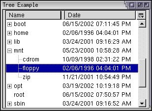

Trees and Templates
The following describes how to use a template with a tree.
Adding Datasources to Trees
When using a tree, you will often use a template to build its content, to handle a large amount of hierarchial data. Using a template with a tree uses very much the same syntax as with other elements. You need to add a datasources and a ref attribute to the tree element, which specify the datasource and root node to display. Multiple rules can be used to indicate different content for different types of data.
The following example uses the history datasource:
<tree datasources="rdf:history" ref="NC:HistoryByDate"
flags="dont-build-content">As described in the previous section, the tree may use a tree builder for template generation instead of the normal content builder. This means that elements will not be created for every row in the tree, making it more efficient. The flags attribute set to the value dont-build-content, as used in the example above, indicates that the tree builder should be used. If you leave the attribute out, the content builder will be used. You can see the difference by using Mozilla's DOM Inspector on a tree with and without the flag.
If you do use a content builder instead, note that the content won't generally get built until it is needed. With hierarchical trees, the children don't get generated until the parent nodes have been opened by the user.
In the template, there will be one treecell for each column in the tree. The cells should have a label attribute to set the label for the cell. This would normally be set to an RDF property so that the label is pulled from the datasource.
The following example demonstrates a template-built tree, in this case for the file system.
Example 9.3.1: Source<tree id="my-tree" flex="1"
datasources="rdf:files" ref="file:///" flags="dont-build-content">
<treecols>
<treecol id="Name" label="Name" primary="true" flex="1"/>
<splitter/>
<treecol id="Date" label="Date" flex="1"/>
</treecols>
<template>
<rule>
<treechildren flex="1">
<treeitem uri="rdf:*">
<treerow>
<treecell label="rdf:http://home.netscape.com/NC-rdf#Name"/>
<treecell label="rdf:http://home.netscape.com/WEB-rdf#LastModifiedDate"/>
</treerow>
</treeitem>
</treechildren>
</rule>
</template>
</tree>Here, a tree is created with two columns, for the name and date of a file. The tree should display a list of the files in the root directory. Only one rule is used, but you may add others if needed. Like with other templates, the uri attribute on an element indicates where to start generating content. The two cells grab the name and date from the datasource and place the values in the cell labels.
This example shows why the uri attribute becomes useful. Notice how it has been placed on the treeitem in the example, even though it is not a direct descendant of the rule element. We need to put this attribute on only those elements that we want repeated for each resource. Because we don't want multiple treechildren elements, we don't put it there. Instead we put the uri attributes on the treeitem elements. Effectively, the elements outside (or above) the element with the uri attribute are not duplicated whereas the element with the uri attribute and the elements inside it are duplicated for each resource.

Note in the image that additional child elements below the top-level elements have been added automatically. XUL knows how to add child elements when the templates or rules contain tree elements or menu elements. It will generate tree elements as nested as necessary based on the available RDF data.
An interesting part of RDF datasources is that the resource values are only determined when the data is needed. This means that values that are deeper in the resource hierarchy are not determined until the user navigates to that node in the tree. This becomes useful for certain datasources where the data is determined dynamically.
Sorting Columns
If you try the previous example, you might note that the list of files is not sorted. Trees which generate their data from a datasource have the optional ability to sort their data. You can sort either ascending or descending on any column. The user may change the sort column and direction by clicking the column headers. This sorting feature is not available for trees with static content, although you can write a script to sort the data.
Sorting involves three attributes, which should be placed on the columns. The first attribute, sort, should be set to an RDF property that is used as the sort key. Usually, this would be the same as that used in the label of the cell in that column. If you set this on a column, the data will be sorted in that column. The user can change the sort direction by clicking the column header. If you do not set the sort attribute on a column, the data cannot be sorted by that column.
The sortDirection attribute (note the mixed case) is used to set the direction in which the column will be sorted by default. Three values are possible:
- ascending: the data is displayed is ascending order.
- descending: the data is displayed is descending order.
- natural: the data is displayed in natural order, which means the order the data is stored in the RDF datasource.
The final attribute, sortActive should be set to true for one column, the one that you would like to be sorted by default.
Although the sorting will function correctly with only those attributes, you may also use the style class sortDirectionIndicator on a column that can be sorted. This will cause a small triangle to appear on the column header that indicates the direction of the sort. If you don't do this, the user may still sort the columns but will have no indication as to which column is currently sorted.
The following example changes the columns in the earlier example to incorporate the extra features:
<treecols>
<treecol id="Name" label="Name" flex="1" primary="true"
class="sortDirectionIndicator" sortActive="true"
sortDirection="ascending"
sort="rdf:http://home.netscape.com/NC-rdf#Name"/>
<splitter/>
<treecol id="Date" label="Date" flex="1" class="sortDirectionIndicator"
sort="rdf:http://home.netscape.com/WEB-rdf#LastModifiedDate"/>
</treecols>Persisting Column State
One additional thing you might want to do is persist which column is currently sorted, so that it is remembered between sessions. To do this, we use the persist attribute on each treecol element. There are five attributes of columns that need to be persisted, to save the column width, the column order, whether the column is visible, which column is currently sorted and the sort direction. The following example shows a sample column:
<treecol id="Date" label="Date" flex="1"
class="sortDirectionIndicator"
persist="width ordinal hidden sortActive sortDirection"
sort="rdf:http://home.netscape.com/WEB-rdf#LastModifiedDate"/>Additional Rule Attributes
There are two additional attributes that can be added to the rule element that allow it to match in certain special circumstances. Both are boolean attributes.
- iscontainerIf this attribute is set to true, then the rule will match all resources that have children. For example, we could use this rule to match bookmark folders. This is convenient as the RDF datasource does not need to include any special attributes to indicate this.
- isemptyIf this attribute is set to true, then the rule will match all resources that have no children.
The two attributes above are really the reverse of each other. A resource might be a container and be an empty one as well. However, this is different from a resource that is not a container. For example, a bookmark folder is a container but it might or might not have children. However a single bookmark or separator is not a container.
You can combine these two elements with other attribute matches for more specific rules.
(Next) Next, we'll look at some of the datasources provided by Mozilla.
Examples: 9.3.1